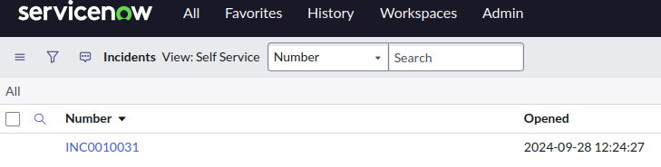

Summit Connect Madrid 2024 - Event-Driven Ansible MicroLab Accede a través del enlace "Servicenow" de la barra superior derecha utilizando las credenciales dadas. Comprueba como se ha abierto el ticket que informa del problema.  3.5. Comprobar Ansible Controller 3.7. Aprobar remediación